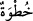
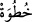
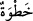
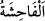
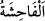
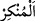

kadınlar temiz erkeklere, temiz erkekler de temiz kadınlara yaraşır. Bu
sonuncular, (iftirâcıların) söylediklerinden çok uzaktırlar. Kendileri için bağışlanma
ve güzel bir rızık vardır.
“Ey îman edenler! Şeytanın adımlarını takip etmeyin.”
“ , “ kelimesinin çoğuludur. O ise yürüyen kimsenin iki ayağı arasındaki
mesafe, yâni adımdır. “ ise bir kez adım atmak demektir. Burada adım söz konusu
olmasa da ‘adımları takip etmek” iktidâ etmek/uymak, peşinden gitmek ve yoluna uymak
mânâsında kullanılmıştır. Burada kasdedilen ise şeytanın sîreti ve yoludur. Yâni
şeytanın sizi çağırdığı, kalplerinize vesvese verip gözlerinize süslediği yollara
girmeyin. Çirkin şeyleri yaymak ve yayılmasını arzulamak da bunlardan biridir.
“Kim şeytanın adımlarını takip ederse,” çirkin ve kötü bir iş yapmış olur.
“muhakkak ki o,” şeytan “edepsizliği (yüz kızartıcı suçları) ve kötülüğü emreder.”
“ ve “ ister fiil ister söz olsun örfe ve akla göre çok çirkin sayılan şey
ve “ ister fiil ister söz olsun örfe ve akla göre çok çirkin sayılan şey
demektir. “ ise şerîatın reddettiği işlerdir.
Ebü’l-Leys der ki: “ hiçbir şerîat ve sünnette yeri olmayan şeydir.”
el-Müfredât’ta ise şöyle der: “ düzgün akılların çirkin olduğuna hükmettiği yahut
akılların çirkin saymak konusunda kararsız kalıp şerîatın çirkinliğine hükmettiği her
şeydir.
Âyette onların durumunu tahkir etmek üzere şeytanın kötülüğü süslemesi ve onları
şerre teşviki istiâre yoluyla “emretmek” diye ifâde edilmiştir.
Bu açıklamalarla, günahları yok eden tevbeye muvaffak kılarak ve o günahlara
keffâret olacak hadler koymak sûretiyle “Eğer üstünüzde Allah’ın lütuf ve merhameti
olmasaydı, içinizden hiçbir kimse asla” ilâ-nihâye olmasa da kıyâmete kadar “temize
çıkamazdı” günahların kirinden temizlenemezdi.
“Fakat Allah” size yaptığı gibi lütuf ve rahmetinin eserlerini üzerine boşaltarak,
tevbeye yönlendirerek, sonra da tevbesini kabul ederek kullarından “dilediğini
arındırır” temize çıkarır.
Burada Kaderiyye aleyhine bir delil vardır. Çünkü onlar nefislerin temizlenmesinin
Allah’ın tevfîkı olmaksızın tâat ve ibâdetlerle olacağını iddiâ etmişlerdir.
“Allah işitir” sözleri çok iyi işitir. Hz. Âişe’ye iftirâ ile ilgili söyledikleri sözler ve
bundan tevbe etmeleri de buna dâhildir “ve” bilinen her şeyi “bilir.” O kimselerin
niyyetleri de buna dâhildir.
Burada o kimseleri tevbede samimi olmaya teşvik vardır.
Niyet hâlis olmayınca amelden ne çıkar?
Bu âyette bâzı hususlara işâret edilmiştir: